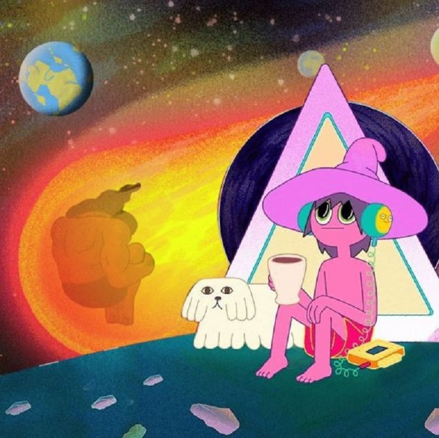

The Midnight Gospel es una serie de televisión estadounidense de animación para adultos creada por Pendleton Ward y el comediante Duncan Trussell. Es la primera producción animada de Ward para Netflix. La serie sigue al spacecaster Clancy, que posee un simulador de multiversos. Mediante este, él viaja a través de mundos a punto de sufrir sus propios apocalipsis, con el objetivo de entrevistar a sus habitantes para su spacecast, y así mejorar espiritualmente.
fue producida por la empresa Titmouse inc lanzada por Netflix el 20 de abril de 2020 la empresa Titmouse inc es un estudio de animación estadounidense que desarrolla y produce programación de television animada, largometrajes, videos musicales, secuencias de titulos, comerciales y cortometrajes Algunas de sus producciones incluyen Breadwinners para Nickelodeon, T.O.T.S. para Disney, Motorcity para Disney XD, Big Mouthy The Midnight Gospel para Netflix, Metalocalypse, Los hermanos Venture y Black Dynamite para Adult Swim,y Megas XLR y Mao Mao: Heroes of Pure Heart para Cartoon Network.
En todos los episodios, la serie trata con diferentes temas que son explorados a través de las entrevistas. Durante la primera temporada, los invitados hablan sobre tópicos como la magia, meditación, el perdón, espiritualismo, rituales funerarios, lo positivo de la muerte, el uso de drogas, el dolor, Moksha (trascendencia) y el existencialismo. La animación también sirve de fondo para las historias; amplían las entrevistas y complementan intencionalmente el diálogo de estas.11 Por ejemplo, en el episodio con Anne Lamott, ella comenta sobre su falta de miedo a la muerte mientras su personaje es transportado a una picadora de carne industrial por unos payasos. Estas secuencias animadas atraen al espectador a la conversación y lo hacen una parte importante de la exploración del tema de esta.
Un tema recurrente en varios episodios es el ciclo de la vida; un análisis del nacimiento y de la muerte. La serie refuerza cómo este ciclo es un proceso continuo y definitivo del que no se puede escapar. En el último capítulo de la primera temporada hay una discusión más profunda acerca del milagro de la vida, el sufrimiento que la existencia trae a la vida humana, y el dolor detestable que la muerte trae con esta. El tópico principal de este episodio, titulado «Mouse of Silver», trata sobre cómo lidiar con la pérdida de un ser querido. Para Trussell, el último episodio es aún más personal debido al discurso surgido a partir de la profunda tristeza que sintió después de su madre falleciera de cáncer